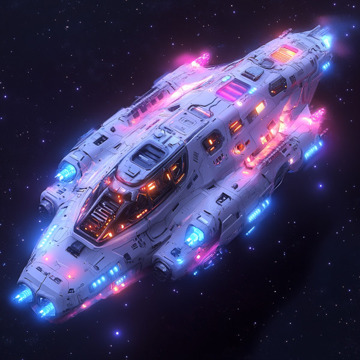
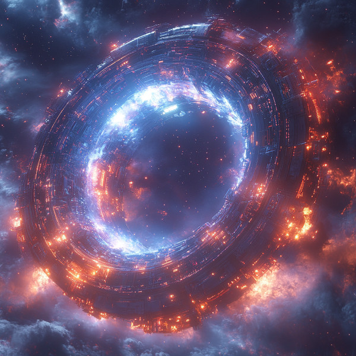

Wormholes
Figure 1: A wormhole splitting time and space
Wormholes can be created using special quantum manipulation devices (“worm orbitals”), but doing so requires a tremendous amount of renewable energy, typically harnessed by quantum oscillators the size of a moon. These devices are incredibly expensive to maintain and can pose extreme dangers if proper precautions are not taken. Despite the costs and risks, wormholes offer significant advantages by drastically reducing travel time and costs along trade routes, making them a valuable asset for connecting very large star systems. While faster-than-light travel is generally more economical, it has greater impacts on time dilation, making wormholes the preferred method for stable, long-term interstellar connections between major hubs.
“worm orbitals”
Stable wormhole creation
Using two orbitals to stabilize a wormhole involves placing one orbital at the entrance and another at the exit point. These orbitals work in synchronization to create and maintain a stable and traversable wormhole. The entrance orbital initiates the wormhole, while the exit orbital ensures stability by managing the exotic matter required to keep the wormhole’s throat open. This dual-orbital setup is crucial for preventing collapse and ensuring a reliable connection between distant points in space.
Worm Generators (Separate Constructs)

Figure 2: A Separate Construct Worm Generator
Worm Generators are designed for exploratory missions, temporary connections, or situations where flexibility and adaptability are key. These generators are compact, modular devices that can be deployed quickly and repositioned as needed.
- Separate from Fuel Source: Worm Generators are not self-contained; they rely on a separate, massive energy source, such as a moon-sized quantum oscillator, to power the wormhole. Energy is transferred via highly advanced energy beams or wireless transmission, allowing the generators to operate even when distant from their power source.
- Compact and Efficient: The design of Worm Generators focuses on efficiency and mobility. They are relatively small compared to the integrated structures, featuring streamlined components like quantum field emitters, exotic matter containment units, and communication arrays, all optimized for quick deployment and operational flexibility.
- Use Cases:
- Exploratory Missions: Ideal for creating wormholes to uncharted regions of space, allowing for the rapid mapping and assessment of new areas.
- Temporary Connections: Useful for setting up temporary wormholes, such as for emergency evacuations, scientific expeditions, or one-off trade missions.
- Quick Deployment: The compact design allows these generators to be deployed quickly and efficiently, with the ability to relocate as needed.
Integrated Wormhole Generators (Massive, All-in-One Structures)

Figure 3: Collosal worm generator
These integrated wormhole generators are designed for established trade routes between major star systems, where a permanent and stable wormhole is required. These generators are massive, moon-sized structures that combine both the wormhole-generating technology and the energy source into one cohesive unit.
- Self-Contained Power: Unlike the separate Worm Generators, these integrated structures house their own quantum oscillators, providing a near-limitless supply of energy to sustain the wormhole indefinitely. This design ensures maximum stability and power, with all systems operating in perfect synchronization.
- Massive and Imposing: The sheer size and complexity of these structures make them a permanent fixture in the regions they serve. They resemble colossal spheres or toroidal structures, equipped with extensive energy conduits, quantum field generators, exotic matter containment units, and defensive systems.
- Use Cases:
- Permanent Trade Routes: Essential for maintaining stable, long-term wormholes that support ongoing interstellar trade and travel between key star systems.
- High Traffic Hubs: These structures are ideal for locations where a large volume of traffic passes through the wormhole, requiring continuous, reliable operation.
- Strategic Locations: Deployed in regions where the wormhole is of critical importance, whether for economic, military, or scientific reasons.
Exploratory wormhole creation
Exploratory wormhole creation is a more cautious process aimed at mapping and understanding potential exit points before committing to permanent stabilization.
- Bayesian predictions for potential exits
Before creating an exploratory wormhole, Bayesian prediction models are used to estimate potential exit points. These models help avoid exits that might disrupt already established star systems or pose other risks.
- One orbital creates wormhole
The initial orbital at the starting point creates the wormhole, using quantum field manipulation to open a stable passage through spacetime.
- Photars
Photars, or photon ping devices, are used to check the newly created wormhole. They send out photon pings to gather data about the exit environment, helping to determine if the location is suitable for stabilization.
- Second orbital goes through wormhole to stabilize from the other side
Once the photars confirm a suitable exit, a second orbital is sent through the wormhole to the exit point. This orbital stabilizes the wormhole from the other side, ensuring long-term stability and safety.
Wormhole closing
Closing a wormhole requires careful preparation to ensure no unintended consequences or residual effects.
- Photars are used to make sure nothing else is traveling within the wormhole before closing
Before initiating the closure, photars are employed to ensure that no other objects or travelers are within the wormhole, preventing accidents or unintended losses.
- Two different methods for closing the wormhole
There are two primary methods for closing a wormhole, depending on future plans for the exit area.
- First procedure, the wormhole is closed from both ends, and the two orbitals remain within their respective places within the universe
In the first method, the wormhole is closed from both the entrance and exit points, with each orbital remaining in its respective location. This method allows for potential future reopening of the wormhole if needed.
- Second procedure involves the orbital at the exit end being sent back to the entrance where the other orbital is, and then the wormhole is closed. Second method is used if no returns to the target area are planned for the future
The second method involves returning the exit orbital to the entrance point before closing the wormhole. This method is used when no future travel to the target area is planned, effectively sealing off the connection permanently.
- First procedure, the wormhole is closed from both ends, and the two orbitals remain within their respective places within the universe